Hybrid Image of Cat and Dog, freq = 6.
Hybrid images are an interesting superposition of two filtered images one with a low pass Gaussian filter and the other with a corresponding high pass filter. We created a naive algorithm to generate hybrid images by first applying the filters to two images and then adding the two images together. When applying the filters, we first took a block out of the image for each pixel that matched the size of the filter being applied, this block was chosen so that the center was exactly that pixel. Naturally the image has boundaries with pixels that are impossible to pick such a block, to account for this we padded the image by taking the dimensions of the filter (which were strictly odd integers) taking the integer division of each dimension and extending the borders of the image by that much in all four directions. We filled all the new elements of the image with a reflection of the bordering pieces when the filter is applied only pixels values that were in the original neighborhood influenced the filtered image. Then for every pixel in the original we took a block from the padded image, found the dot product of the block and the filter, and replaced the pixel with the sum of all the values in this dot product. Now as we were only provided with a low pass Gaussian filter it was necessary to create a filter that could be used for high pass. By recognizing that the original image was simple the sum of its high and low pass filtered images we had a simple equation I = L + H. Then by substituting in the filters (L = l*I, H = h*I, I = i*I) we were left with our high pass filter h = i – l, where i is the identity filter of all zeros and a single 1 entry in the center. For the last step we used our newly obtained filter on the second image and then simply added the two image matrices together. Since some of the images did go over the desired [0,1] RGB Bounds the final hybrid image was clipped to prevent these spots from showing.
When choosing images to create as hybrids it is important to have pictures with similar outlines so that at different distances the gradual change is easier to visually accept. Also vital was the choice of which image to apply the low pass and which to apply the high pass. Some of the more vibrant pictures were hard to make out once the low pass had been applied making it unrecognizable in the resulting hybrid. Once the image order had been chosen the cut-off frequency of the filters was needed to be chosen, A lower cut off made the filter smaller and the algorithm much quicker however in many cases it made one image far to prominent to its pair resulting in a poor hybrid. The same was true with too high of a cutoff frequency.
| 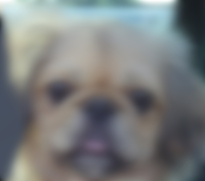 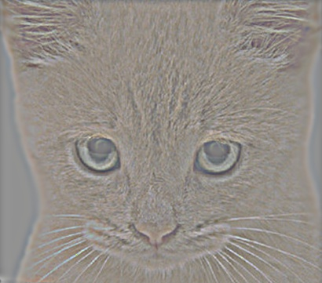 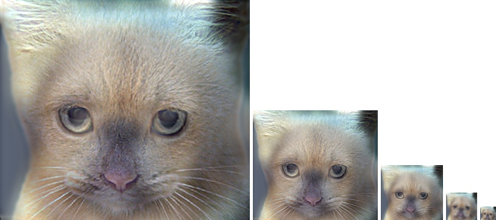 |
| 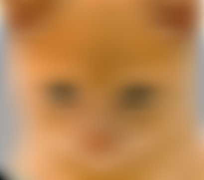 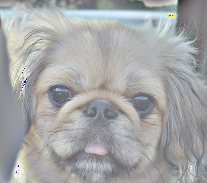 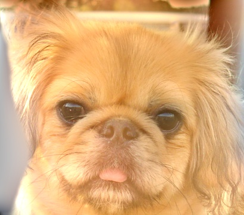 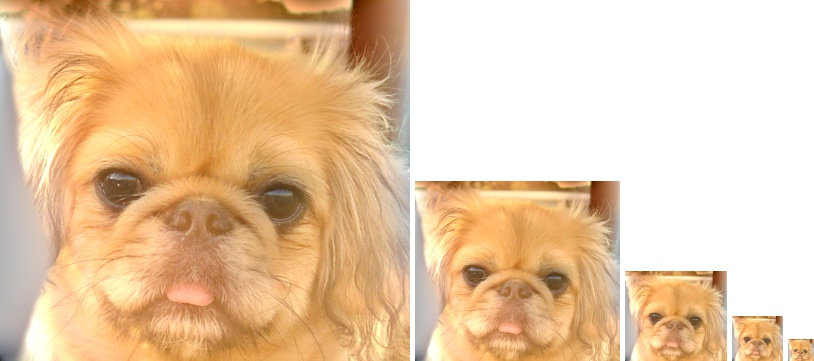 |
We then created several more hybrid images, tweaking the order and the cut_off frequencies:
| 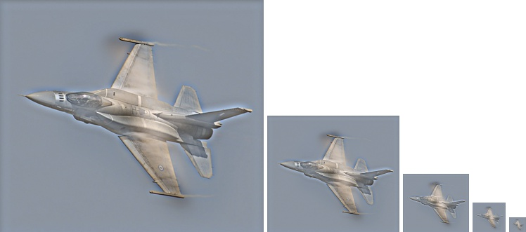 |
| 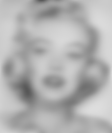 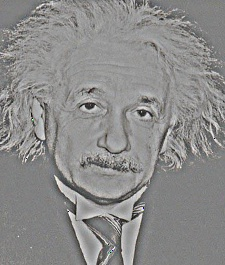 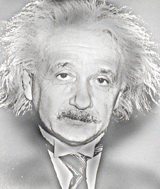 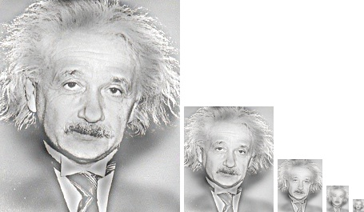 |
| 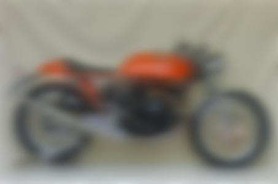 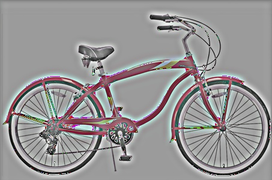 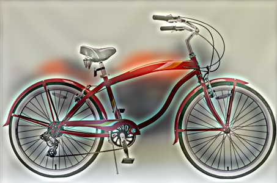 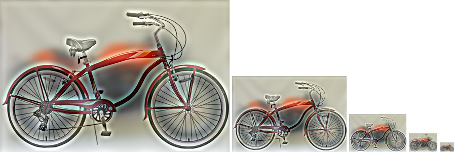 |